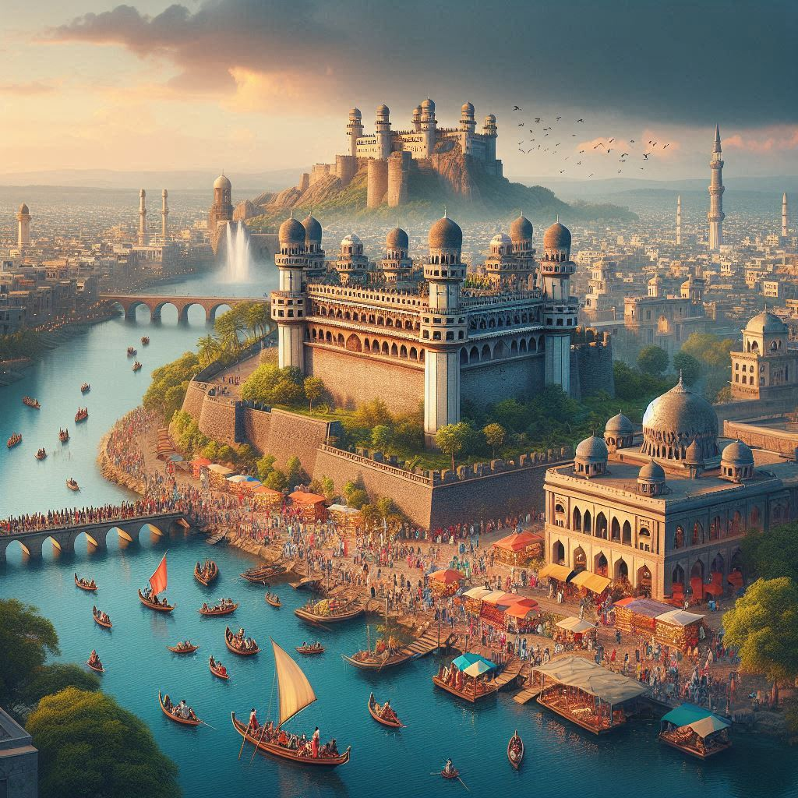
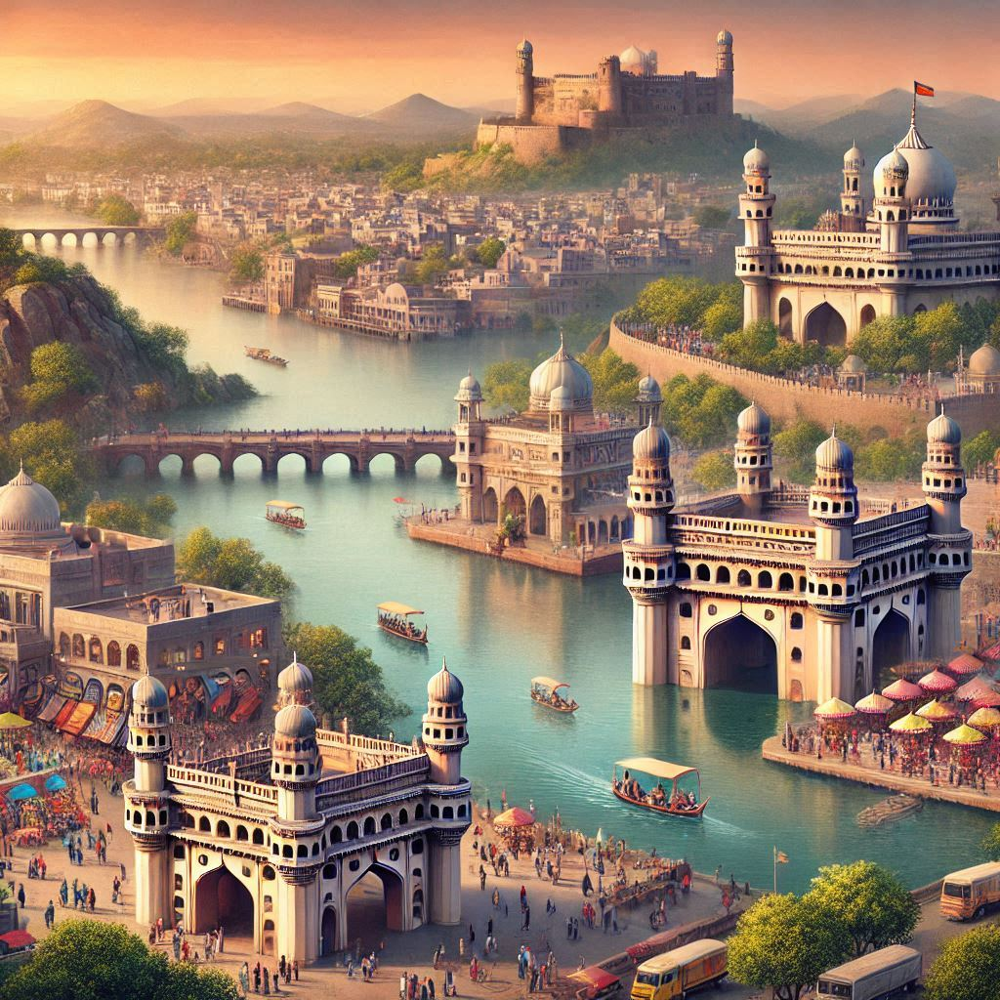

Telangana offers a rich tapestry of tourism experiences, blending historical sites, cultural heritage, natural beauty, and modern attractions. Here’s an overview of the key tourist destinations and attractions in the state:
1. Hyderabad
- Charminar: An iconic symbol of Hyderabad, this 16th-century mosque features stunning Indo-Islamic architecture and is surrounded by vibrant markets.
- Golconda Fort: A magnificent fort complex known for its impressive architecture, history, and panoramic views. It was the capital of the medieval Golconda Sultanate.
- Hussain Sagar Lake: A large artificial lake featuring the famous Buddha statue at its center. The area is popular for boating and scenic views, especially at sunset.
- Ramoji Film City: One of the largest film cities in the world, it offers behind-the-scenes tours, film sets, and entertainment shows.
- Salar Jung Museum: A renowned museum housing a vast collection of art, antiques, and artifacts from various cultures and eras.
2. Warangal
- Warangal Fort: Known for its historical significance and architectural beauty, the fort features intricate carvings and the iconic Kakatiya Kala Thoranam (Warangal Gate).
- Thousand Pillar Temple: An ancient temple dedicated to Lord Shiva, famous for its intricate carvings and architectural brilliance.
- Ramappa Temple: A UNESCO World Heritage Site, this temple is known for its unique architecture and stunning sculptures.
3. Khammam
- Khammam Fort: A historical fort that offers a glimpse into the region's past and provides panoramic views of the city.
- Bhadrachalam: A temple town located on the banks of the Godavari River, famous for the Sree Rama Chandra Swamy Temple, attracting numerous pilgrims.
4. Nalgonda
- Nagarjuna Sagar Dam: One of the largest dams in India, it offers boating and scenic views. The nearby Nagarjuna Konda island features archaeological sites and Buddhist relics.
- Buddha Pahad: A significant site with ancient rock carvings and sculptures related to Buddhism.


5. Adilabad
- Kuntala Waterfall: The highest waterfall in Telangana, located amidst lush greenery, making it a popular picnic spot.
- Nirmal: Known for its handicrafts, particularly Nirmal paintings and toys, as well as scenic views of forests and hills.
6. Natural Attractions
- Eturnagaram Wildlife Sanctuary: A biodiversity hotspot, it is home to various species of flora and fauna, making it ideal for nature lovers and wildlife enthusiasts.
- Kawal Wildlife Sanctuary: Known for its rich wildlife, including tigers and various bird species, this sanctuary offers opportunities for wildlife spotting and eco-tourism.
7. Cultural Experiences
- Festivals: Visitors can experience the vibrant culture of Telangana through festivals like Bathukamma and Bonalu, showcasing traditional music, dance, and local cuisine.
- Local Cuisine: Sampling Telangana's delicious food, including Hyderabadi Biryani, Gongura Pachadi, and various sweets, is a must for food enthusiasts.
8. Pilgrimage Sites
- Yadagirigutta: A prominent temple dedicated to Lord Narasimha, attracting pilgrims from all over the region.
- Siddipet: Known for the Sri Siddeshwara Swamy Temple, it is an important spiritual site for devotees.
9. Adventure and Eco-Tourism
- Treks and Nature Trails: Telangana offers various trekking opportunities in areas like the Nallamala Hills and Kambhammetta Hills, ideal for adventure enthusiasts.
- Eco-Parks and Resorts: Several eco-friendly resorts and parks are available for those seeking relaxation amidst nature.
Conclusion
Telangana’s tourism landscape is diverse, offering something for everyone—history buffs, nature lovers, adventure seekers, and food enthusiasts. With its rich cultural heritage and scenic beauty, Telangana is an emerging travel destination in India, providing unique experiences that reflect the state's vibrant identity.